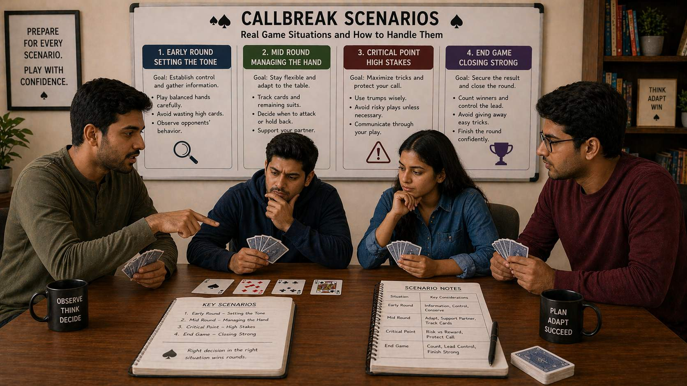

🪶 Introduction
Knowing Callbreak rules is one thing. Knowing what to do when a specific situation arises is another. In real play, you will frequently encounter scenarios that require quick decisions, sometimes with limited information and high stakes. This guide covers the most common and important scenarios in Callbreak and provides actionable guidance for each.
🖼️ Callbreak Scenarios Overview

🎯 Why Scenarios Matter
Most Callbreak decisions are reactive — you respond to what has already happened. The quality of your responses depends on how quickly and accurately you can assess a situation and choose an appropriate action.
Players who have pre-loaded knowledge of common scenarios make faster, better decisions. They do not waste mental energy figuring out basics when a tricky situation arises — they have already thought it through.
🃏 Early Round Scenarios
The early rounds set the tone for everything that follows. How you handle early scenarios influences the entire round trajectory.
Situation: You Have a Strong Opening Hand
What to recognize: You have high cards in multiple suits and a reasonable trump holding.
How to handle it:
- Do not be overly eager to play all your high cards immediately
- Make a realistic call based on your actual trick-winning potential
- Consider leading with a suit where you have length and strength
- Support your partner's strategy if they have also called well
Why it matters: Strong hands can be wasted by overplaying. Preserve strength for when it is truly needed.
Situation: You Have a Weak Opening Hand
What to recognize: You have few high cards, short suits, and limited trump.
How to handle it:
- Make a conservative call that matches your actual potential
- Play passively, following suit with low cards and avoiding taking initiative
- Look for opportunities to let your partner win tricks
- Do not force plays that expose your weakness
Why it matters: Weak hands are not hopeless, but they require realistic expectations and team alignment.
⏱️ Mid-Round Critical Scenarios
Mid-round is where most Callbreak games are decided. These scenarios come up frequently and reward clear thinking.
Situation: You Cannot Follow Suit and Must Choose
This is one of the most common decisions in Callbreak. When you are unable to follow suit, you have three options: play trump, play a low card in another suit, or play a specific card with strategic intent.
How to evaluate:
- Is the current trick high-value enough to justify using a trump?
- Will winning or losing this trick meaningfully affect my ability to fulfill my call?
- Can my partner handle this trick if I let it go?
- What have opponents revealed about their holdings that informs this decision?
General guidance: If the trick is low-value and losing it does not hurt your call, play a low non-trump card and save your trump for later.
Situation: Your Partner Is Trying to Establish a Suit
Your partner has been leading or playing in a specific suit repeatedly, likely indicating strength there.
How to handle it:
- Support their strategy by playing high cards in that suit when you can
- If you cannot follow suit, consider playing trump to protect their effort
- Do not undermine their suit establishment by leading weakly in competing suits
- Communicate support through your card choices
Situation: Opponents Are Building Momentum
Your opponents have won several consecutive tricks and seem to be controlling the round.
How to handle it:
- Play more conservatively to protect your score
- Look for a single high-value opportunity to regain control
- Consider whether your partner might need support to stop the bleeding
- Avoid desperate, high-risk plays unless the situation absolutely demands it
🎯 Late-Round High-Stakes Scenarios
When tricks are running low, each decision carries more weight. Late-round scenarios often determine whether you fulfill your call.
Situation: You Are Close to Fulfilling Your Call
You need just 1 or 2 more tricks to meet your commitment.
How to handle it:
- Play to secure what you have, not to gain more
- Avoid risky plays that could cost you the tricks you need
- If you are in a position to win a trick that fulfills your call, prioritize that
- Trust your partner to handle their own needs if your paths conflict
Why it matters: Securing a sure thing is better than gambling for an uncertain better outcome.
Situation: You Are Far From Your Call
You need several tricks you are not sure you can win.
How to handle it:
- You may need to take calculated risks to close the gap
- Look for opportunities where your specific cards match the situation
- Consider whether opponents are vulnerable in specific suits
- Balance aggression with reason — desperation should not override calculation
Situation: The Last Few Tricks Are Critical
The round is down to its final 2-3 tricks and the outcome is close.
How to handle it:
- Play your highest percentage options
- Trust your earlier reads about opponent holdings
- Do not take new risks — use what you have learned
- Coordinate with your partner through your cards if the situation allows
📊 Calling Scenarios
Calling decisions set the stage for the entire round. These scenarios address common calling situations.
Situation: You Have a Marginal Hand
Your hand is neither clearly strong nor clearly weak.
How to handle it:
- Consider whether the marginal aspects are in suits that matter
- Factor in your partner's likely call — supporting them matters
- Err on the side of a lower call when uncertain
- Do not let excitement about a single high card inflate your call
Situation: Your Partner Called High
Your partner has committed to winning many tricks.
How to handle it:
- Adjust your call to support a cooperative strategy
- Do not make a conflicting call that splits your team's focus
- If your hand can support your partner, consider a moderate call that gives them flexibility
- Plan your play to complement their likely strategy
Situation: Opponents Are Close to Winning
The game score means opponents are one good round away from victory.
How to handle it:
- You may need to take more risk to prevent their win
- Consider whether your team needs a strong offensive round
- Balance aggression with smart play — do not give the game away through carelessness
- Discuss with your partner if possible, but be ready to act on your read
🤝 Partner Communication Scenarios
Working with your partner creates specific scenarios that require coordinated responses.
Situation: Your Partner Made an Accurate Call But Needs Help
They called what they can win, but only if you support them correctly.
How to handle it:
- Read their strategy through their play and adjust accordingly
- If they lead a suit, support it even if you might prefer to lead elsewhere
- Communicate willingness to sacrifice your own comfort for the team goal
- Trust that they called accurately and do what you can to help
Situation: Your Partner Made a Questionable Call
You think your partner called too high based on what you have seen.
How to handle it:
- Support them anyway — questioning calls mid-round helps no one
- Adjust your play to give them the best chance possible
- After the round, discuss their calling if you play together regularly
- Do not play differently out of resentment — this compounds the problem
Situation: You and Your Partner Have Misaligned Calls
Your calls seem to work against each other rather than together.
How to handle it:
- During play, prioritize the higher call — it represents the more important team goal
- Adjust your play to avoid undermining the higher call
- Look for any opportunity to support rather than compete
- After the round, recalibrate your calling to align better in future rounds
❓ FAQ
How should I handle a strong opening hand?
Do not be overly eager to play all your high cards immediately. Make a realistic call, consider leading with a suit where you have length and strength, and preserve strength for when it is truly needed.
What should I do when I cannot follow suit?
Evaluate whether the trick is high-value enough to justify using a trump. If the trick is low-value and losing it does not hurt your call, play a low non-trump card and save your trump for later.
How do I support my partner's strategy?
If they lead a suit, support it even if you might prefer to lead elsewhere. Communicate willingness to sacrifice your own comfort for the team goal and trust that they called accurately.
What should I do when opponents are building momentum?
Play more conservatively to protect your score, look for a single high-value opportunity to regain control, and avoid desperate, high-risk plays unless the situation absolutely demands it.
🧾 Summary
Common Callbreak scenarios have proven responses:
- Strong or weak opening hands require different strategic approaches
- Mid-round decisions often hinge on resource conservation and partner support
- Late-round scenarios demand play to secure your call or calculated catch-up risks
- Calling scenarios require honest hand evaluation and team coordination
- Partner scenarios require trust and adjusted play to support calls
- Opponent response scenarios require staying calm and updating your reads
The more familiar you are with these scenarios, the faster and more accurate your decisions will be. Review them before play, and you will be prepared when they arise.
🔥 SEO Keywords
callbreak scenarios, callbreak game situations, how to play callbreak different situations, callbreak mid game strategy, callbreak late game strategy, callbreak scenario tips